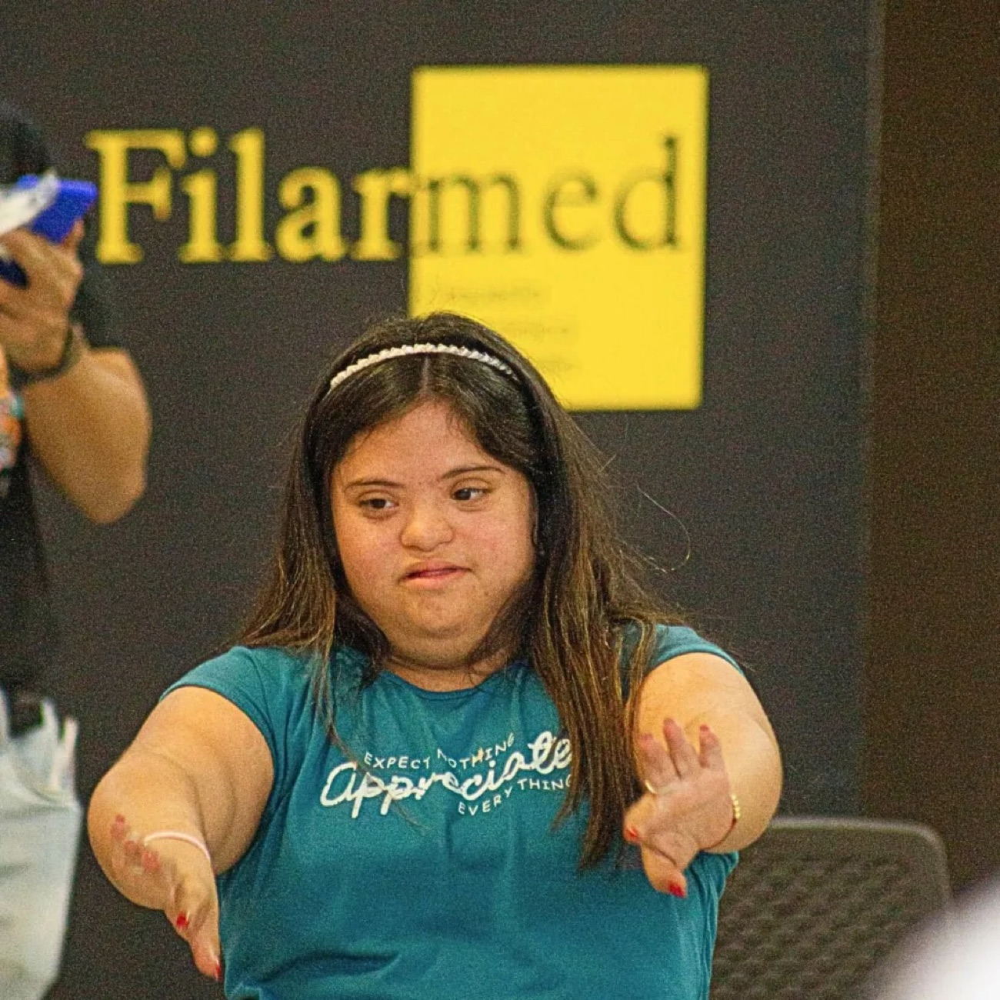
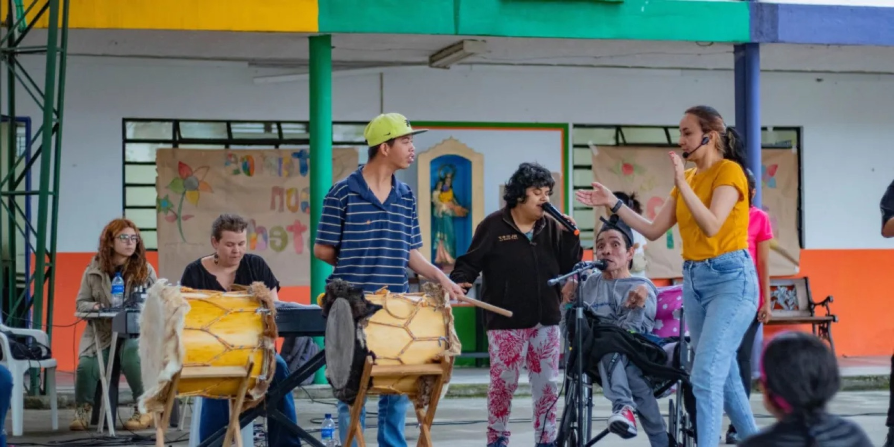

Visibilizar el oficio
Visibilizar el oficio
Visibilizar el oficio
Visibilizar el oficio
Entrega final · 20% · Diseño de Experiencia
Un proyecto de diseño para que los jóvenes con síndrome de Down del programa Soy Músico se presenten, desde su propia voz, en la web de Filarmed.
Lee el proceso · abajo está el prototipo navegableEl sitio actual de Soy Músico presenta el programa en bloque —“más de 130 jóvenes”, “historias que inspiran”— y todo apunta a la donación. Las personas, una por una, no aparecen: no hay perfiles, ni nombres, ni su voz. Es, sin querer, una página que habla de ellos para convencer a un tercero.
Diseñar el módulo que falta dentro de la misma web: un lugar donde cada joven con síndrome de Down se presente en primera persona, de forma accesible y digna. No una página nueva “sobre” el programa, sino la voz de quienes lo hacen.
Comprobado en vivo en filarmed.org/impacto-social/soy-musico: la propia página afirma que “su voz es escuchada y valorada” — pero esa voz no aparece por ningún lado en el sitio.
La persona elige qué mostrar de sí misma. No se habla por ella.
Texto grande, frases cortas y pictogramas; tipografía legible (Atkinson Hyperlegible).
Muestra competencia y oficio; evita el tono de lástima o de “superación”.
Vive en la web del programa, su punto de contacto real con el público.
Respeta su identidad real: logo, color, tipografía y fotografía.
Consentimiento y decisión de cuánto exponerse; sin rostros si no se autoriza.
No llegué a la web de una vez. Exploré formatos físicos y digitales, y los contrasté con los criterios y la evidencia.
Ficha de oficio en el atril · tag “así lo hago” que viaja con la pieza · mural del equipo.
Perfil por código QR · historia/post para redes · programa de concierto digital.
Un módulo “Voces” dentro de la web de Filarmed: directorio + página propia por persona.
También probé direcciones de arte: de un “cartel de festival” pasé a una dirección editorial y fotográfica con los assets reales del programa — la que quedó.
Un módulo para la web de Filarmed donde cada participante tiene su propia página: se presenta en primera persona —qué hace, qué le gusta, cómo lo hace y con quién toca— con lectura fácil y la identidad real del programa. El home es una experiencia inmersiva; cada perfil, un espacio accesible.
No es una maqueta estática: es navegable. Lo encuentras al final de esta página — recorre las voces y entra a cada perfil.
Cada decisión se contrastó con la evidencia (P1, I1) y con los seis criterios. La propuesta centra la voz propia y la competencia, no la lástima — justo lo que el campo señaló.
Tipografía Atkinson Hyperlegible, texto grande y escalable (botón A/A+), alto contraste, frases cortas y pictogramas; respeta “reducir movimiento”.
Límite honesto y siguiente paso: prueba con usuarios reales (participantes e intermediarios), con consentimiento, para validar comprensión y autoría.
El mayor aprendizaje fue mover el punto de vista: de presentar a las personas en bloque a darles un lugar para presentarse. El diseño gráfico no “ayuda” desde afuera; abre un espacio para que su competencia se vea, con dignidad y en primera persona.
Honestidad del alcance: los datos e imágenes son de ejemplo y falta la prueba con usuarios. Esa validación —con consentimiento— es el siguiente paso del anteproyecto.
La propuesta, en vivo
Este es el prototipo navegable. Desliza para conocer las voces y entra a cada perfil.

Programa Soy Músico · Filarmed
Las personas del programa se presentan aquí, con su propia voz.
La idea
“La música me hace feliz. Me siento contenta cuando toco.”— participante de Soy Músico
El programa ya cuenta su historia, pero en bloque. Las personas, una por una, no aparecen.
Aquí cada músico se presenta en primera persona —qué hace, qué le gusta y cómo lo hace— con apoyos de lectura fácil para que cualquiera pueda leerlo y entenderlo.
